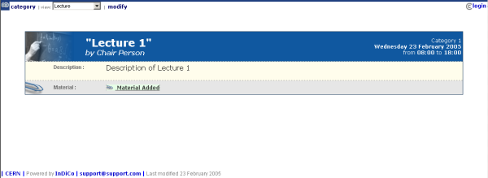

| Prev | Chapter 4. Lectures | Next |
The Lecture Display is the view that users of the lecture will see. If the lecture is public they will not need to login to view the lecture. It is also the area in which you can access the modification areas if you have access rights. There are various views in which the lecture can be displayed, the following sections show the different views and displays of the different parts of a lecture. If you have access rights to view any parts of the lecture you can do so by clicking on their name, for example material (See material Display).
This is the default view for lectures in Indico. If you have modification rights to any parts in the lecture you will see the modification icon  which will take you to the managment area for that item.
which will take you to the managment area for that item.
